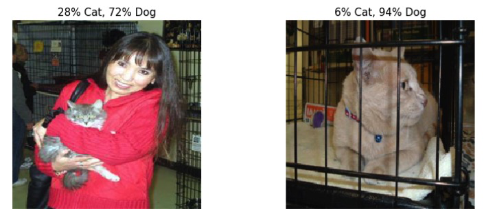
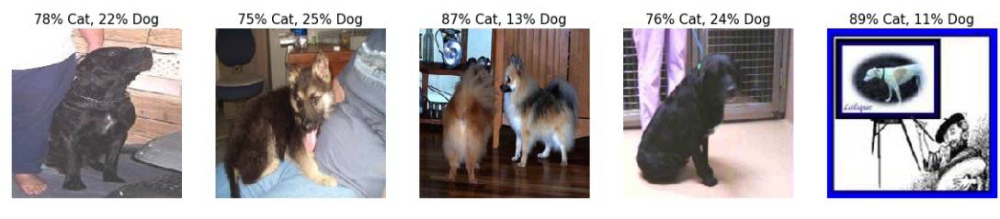
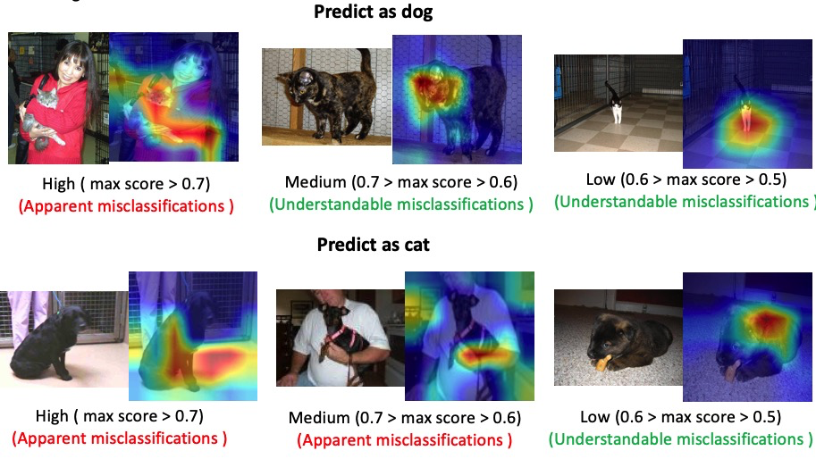
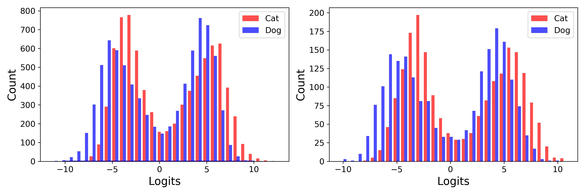
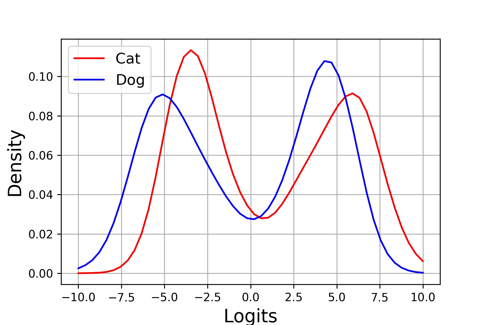
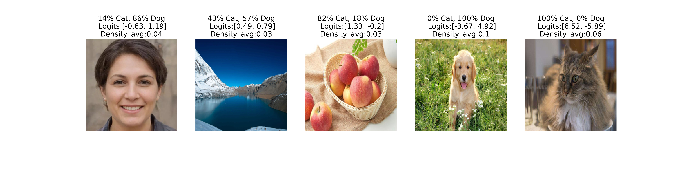
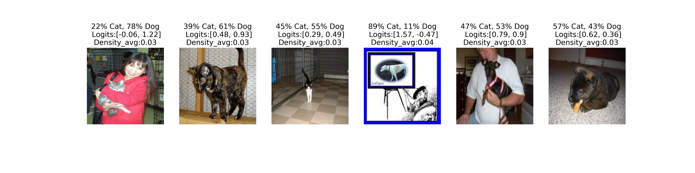

Project Description
For a classification problem, we generally use a softmax function to get the predicted score. Although a softmax function can normalize the results, it cannot be used to identify unknown class samples and hard samples. A low predict score for a certain class does not mean an unknown class or a hard sample. In addition, it is hard to understand which part of images have a strong influence on the final prediction, especially for these hard samples. So, I used Gradientweighted Class Activation Mapping (Grad-CAM) to explain the results.
There are two contributions in this final project. First, I proposed a robust classification approach to identify samples from unknown classes and hard samples. Second, I used Grad-CAM to visualization the attention of neural networks to make the results more explainable. Specifically, I find that apparent misclassifications tend to have a larger attention area and understandable misclassifications tend to have a smaller attention are.
Dataset
The cat and dog dataset used in this project is downloaded from Kaggel. Several images are shown in the below:
The data augmentation in the training set includes random rotation (20), random crop scale (0.8, 1.0), Random Horizontal Flip, Random Affine, Normalization. The test set does not use data augmentation.
The batch size is 32 and the dataset will be shuffled.
Model Training
Detailed information about model training can be found in trainer_cat_dog.ipynb.
The accuracy in the training set and the test set are 0.9809 and 0.9812 respectively.
Error analysis (test set)
Althought the accuracy is high (more than 0.98), the trained model still can make some errors. True label is cat, but predicted label is dog and the score is high.

True label is dog, but predicted label is cat and the score is high.

The Grad-CAM results for these wrong predicted images are:

We can find that:
- Apparent misclassifications tend to have a larger attention area;
- Understandable misclassifications tend to have a smaller attention area;
Distribution analysis
To solve the problem about apparent misclassifications and reduce the number of understandable misclassifications, we want to analyze the distribution of logits and scores for different classes.
Below, we analyzed the distribution of logits for cat and dog class. The results show that the absolute value for most of logits are in [2, 7], which means that in our training set it is rarely for the model to make a prediction with a lower logits (around 0) or a higher logit (greater than 7 or less than -7). Thus, it is unresonable to believe the prediction if model give such logits. This is the key observation in this project.

Kernel density estimation for logits is:

Analyze the robustness of classification using logits kernel density estimation
It is common and unavoidable for a model to predict some unkonwn images, including images from unknown classes. Thus, we downloaded three kind of images including a human face, landscape, and apples, which are shown in the below. All of these classes are not included in the training set. We want our model give a low score for these images. But we can find that for the first and third image the model give a high score, which means the model make some serious misclassifications.
For the fourth and fiveth image, even though they are also come from the Internet, the model can give a good prediciton and high scores. Thus, the trained model have a good generalization.
If we see the average of density, we can find that if we use a thershold of 0.04, these wrong predicitons can be alleviated. This is because our model has not “seen” these classes, it will give a low logits for these images. Then we can use this conclusion to identify the unseen classes images and improve the robustness of the model.

In the above, we test some images from the Internet. Now, we will analyze the test set. The results are shown below. These results also show that a threshold of 0.04 for the average of density is good enough to elimate the wrong predictions.

Conclusion
- The proposed image classification approach can identify data out of training set based on logits kernel density estimation;
- The proposed image classification approach can help to improve accuracy by identifying data with low density;
- The proposed approach is explainable and can be understand visually;
More resources
Note that this project is my final project for EE475 at Northwestern University in 2020 Fall.